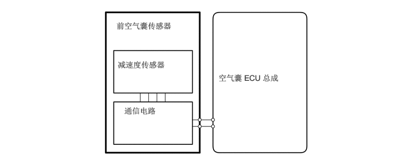
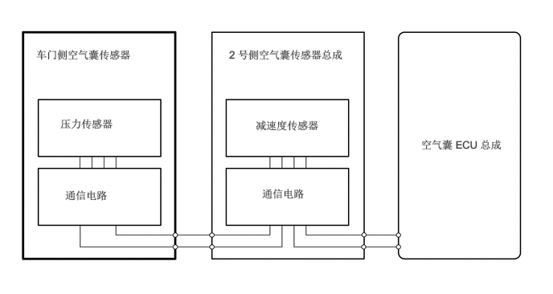
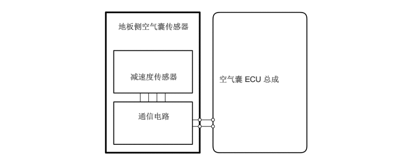
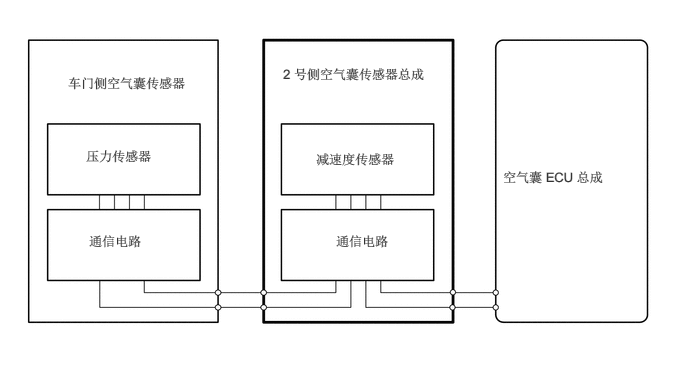

构造
前空气囊传感器
前空气囊传感器由电子式减速度传感器和通信电路组成。
车门侧空气囊传感器
车门侧空气囊传感器由电子式压力传感器和通信电路组成。
地板侧空气囊传感器
地板侧空气囊传感器由电子式减速度传感器和通信电路组成。
2 号侧空气囊传感器总成
2 号侧空气囊传感器总成由电子式减速度传感器和通信电路组成。
功能
前空气囊传感器
根据发生正面碰撞时车辆的减速度，前空气囊传感器内部元件中产生变形，进而转换为电信号。

车门侧空气囊传感器
各车门侧空气囊传感器检测对车辆相应侧的冲击，并将前门变形引起的压力值信号通过 2 号侧空气囊传感器总成发送至空气囊 ECU 总成。

地板侧空气囊传感器
发生侧面或后侧碰撞时根据车辆减速度，地板侧空气囊传感器内部元件内发生变形并转化为电信号。

2 号侧空气囊传感器总成
根据发生后侧碰撞时车辆的减速度，2 号侧空气囊传感器总成内部元件中产生变形，进而转换为电信号。
